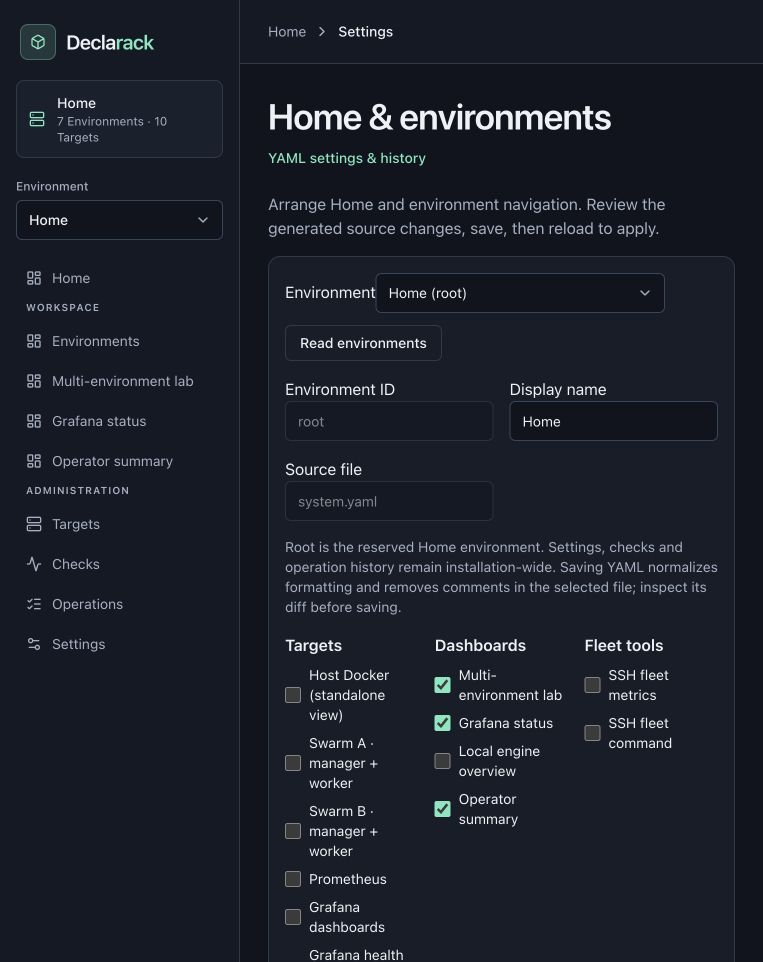
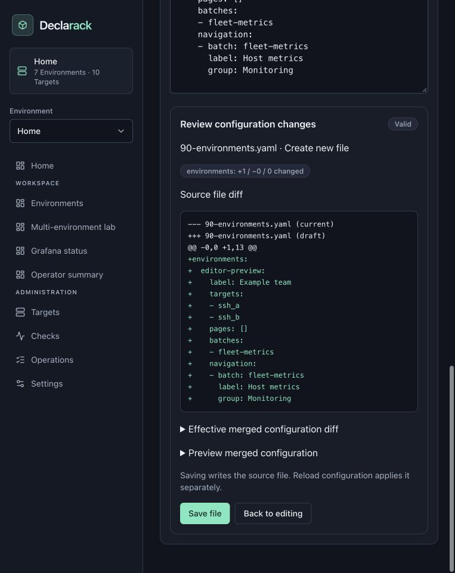

How configuration fits together¶
Declarack has one active system configuration revision in the database. It contains YAML documents merged into one configuration. Files seed an empty installation and remain explicit import/export sources. It describes connections, administration views and execution. It is broader than a dashboard layout, and it is separate from the Compose files used to deploy your applications.
From deployment to the running system¶

| Layer | What you configure | Where it lives |
|---|---|---|
| Deployment / bootstrap | Config source, database connection, mounts, process settings and mounted secrets | Compose or Swarm service specification and environment variables |
| System configuration | Targets, environments, navigation, pages, features, operations, batches, checks and auth references | Active database revision containing logical YAML documents |
| Adapter definitions | Connection types, executors and bundled features/operations | Trusted adapter folders loaded at startup |
| Application sources | Compose YAML, Git repository/ref and deployment inputs | External folders/repositories or adapter source records |
| Runtime state | Check history, tracked runs, saved source metadata and configuration revisions | SQLite by default, or PostgreSQL |
The database owns both active configuration and runtime state. YAML source files are no longer required for ordinary restarts after the initial import. Browser preferences and transient sessions are separate again. An external database does not enable multiple active controllers; one controller remains supported. See deployment and storage.
Definitions reference each other¶

- Target: where you connect, and which features that connection exposes.
- Environment: a group of existing targets with page, fleet-tool and navigation placement. A target can belong to several environments or none.
- Root: the reserved environment named
root, normally labelled Home. It owns links to installation-wide tools. It is not an inheritance parent for other environments, and it does not automatically contain every target. - Page: a reusable dashboard whose sources explicitly name targets and read operations. Placing a page in an environment does not filter its sources to that environment; it may intentionally query several environments.
- Batch / fleet tool: a reusable operation run across selected targets. If its
targetslist is omitted, eligible targets are inferred from environments that assign it. The UI limits selection to the current environment's targets and the batch's eligible list. Every inferred target must support the operation. - Feature and operation: a feature describes a resource view and its actions; named operations describe requests or commands, with provider bindings that select adapter execution. JSONata maps returned data into the view.
- Check: a scheduled connection test or safe read operation naming a target. It does not require that target to be visible in an environment.
Settings, the complete target inventory, checks and operation history remain installation-wide. Root navigation can order, group, relabel or hide their links. Navigation visibility is not authorization.
Root always exists. Without an environments section, Declarack also generates
one environment per target. With environments: {}, only root remains. Root
starts with no targets or batches and all custom pages unless its pages list is
explicit. Other environments default to empty target/page/batch lists. Explicit
navigation replaces that environment's generated links; it does not merge them.
The old page top_level field is not supported.
A folder is one merged document¶
Files are discovered recursively and sorted by relative path, case-sensitively. Folder names are organizational: they do not create environment scope or namespaces. Mappings merge recursively; a later list, scalar or different type replaces the earlier value at that key. Duplicate YAML keys inside a file fail validation. Hidden files/directories and non-YAML files are ignored.
For example, a later environments.engines.targets: [engine_b] replaces an
earlier [engine_a, engine_b]; it does not append. Prefer one owning file per
environment so its complete definition can be edited through the form. See
exact merge rules and limits.
Complete example: two Docker targets¶
The copyable YAML file uses bundled
Docker definitions; it needs no custom adapter, operation or frontend code.
Adapt the socket paths and mount both engines' sockets before use. Socket paths
are relative to the Declarack process/container, not your browser. The second
path is illustrative: this example does not create a remote tunnel or an engine.
Configure installation authentication through your deployment, such as
DECLARACK_PASSWORD or the supported mounted-secret configuration.
# Adapt both socket mounts before use. Loading this file does not connect to them.
targets:
engine_a:
label: Engine A
connection: docker_socket
socket: /var/run/docker.sock
features: [containers]
engine_b:
label: Engine B
connection: docker_socket
socket: /run/engine-b/docker.sock
features: [containers]
pages:
workloads:
title: Workload overview
sources:
a: {target: engine_a, operation: containers.list}
b: {target: engine_b, operation: containers.list}
cards:
- {label: Engine A containers, value: '$count(data.a)'}
- {label: Engine B containers, value: '$count(data.b)'}
batches:
inventory:
title: Collect container inventory
operation: containers.list
columns:
- {label: Containers, value: '$count(result)'}
environments:
root:
label: Home
pages: [workloads]
navigation:
- {item: environments, group: Workspace}
- {page: workloads}
- {item: targets, group: Administration}
- {item: checks}
- {item: operations}
- {item: settings}
engines:
label: Docker engines
targets: [engine_a, engine_b]
pages: [workloads]
batches: [inventory]
navigation:
- {page: workloads, group: Overview}
- {batch: inventory, label: Collect inventory, group: Tools}
checks:
engine_a_connection:
title: Engine A connection
target: engine_a
every: 1m
What this produces:
| Location | Result |
|---|---|
| Home | Workload overview and the chosen installation-wide links; no target membership |
| Docker engines | Engine A and B workspaces, the shared dashboard, and Collect inventory |
| Workload overview | Separate container counts queried from both engines, regardless of where the page is opened |
| Collect inventory | On-demand reads from selected targets in Docker engines; each target returns its own result |
| Checks | An Engine A connection check scheduled every minute after activation |
The example connects to existing engines; it does not deploy containers. Engine B has no scheduled check here. The connection check does not assert that every container is healthy. Both target workspaces expose the bundled Containers view. Loading/validating the YAML does not execute its inventory operations or checks.
For SSH fleets, use SSH targets with mounted identity and known-hosts files,
enable host_metrics / ssh_commands, and assign a metrics or confirmed command
batch to their environment. Use the complete SSH fleet example
for those transport prerequisites and execution limits.
The operator workflow¶

- Add connections: use Settings → Add integration, or configure target YAML. Add integration creates a source fragment in an editable configuration folder; unsupported setup cases and single-file installations use YAML.
- Arrange your workspace: open Settings → Home & environments. Choose Home, select an existing environment, or create one. Assign existing targets, dashboards and fleet tools, then arrange navigation labels and groups.
- Review the draft: validation covers the full proposed merge. Inspect the generated YAML, document diff and effective merged diff. Existing environments use their owning logical document; new ones need a document destination.
- Save: a revision/digest-checked save stores a pending database revision and history. It does not change the active configuration or filesystem sources.
- Activate: apply the saved revision. With
WRITE_BACK=1, conflict-checked file publication completes first. On restart the active database revision is loaded; pending saved changes remain pending.FORCE_LOAD=1instead imports source files on every startup. Both flags default off. - Recover: restore history into a draft, review, save and activate. For an interrupted write-back, reconcile conflicts or permissions and retry activation or restart. See the storage contract.


The form does not create new dashboard layouts, feature schemas or operation bindings. Define those through the appropriate YAML/deployment workflow, then select them in the environment editor. Existing environment IDs cannot be renamed there, and deleting definitions remains a YAML operation. Split-file environment definitions must be consolidated first. Form saves normalize YAML formatting and remove comments in the affected file; the review exposes that change.
The database owns the active revision for all source providers. Git and Swarm sources retain explicit publication workflows; publishing does not implicitly activate their contents locally. Imports are reviewed before activation. Auth changes require a restart/import. Storage settings explain defaults, flags, exports and write-back recovery.
Where to go next¶
- Configuration editing walkthrough
- Home, page placement and navigation reference
- Copyable configuration snippets
- System configuration reference
- Runnable API tutorial
Browsing an environment¶
Select an environment to keep its targets and shared workflows together. Each member target has a collapsible sidebar group populated from its enabled feature definitions. Opening a resource, detail, terminal or deployment workflow keeps the same environment selected. Breadcrumbs show environment, target and feature. Changing environments is explicit through the selector or Home.
The environment overview collects each target’s configured summary cards and existing summary panels together. Panels show up to five rows, with View all opening the target’s full resource page inside the same environment. Requests are bounded and failures remain isolated by target/feature. Manual operations such as host metrics are not automatically triggered. No cross-target mutation is implied by displaying resources together.
Environment batches expose shared operations such as SSH fleet metrics or fleet
commands. Their eligible targets are intersected with the environment membership;
the execution page lets the operator choose a subset and reports each target’s
result separately. These workflows remain alongside individual target features.
navigation continues to control labels, grouping and ordering; target membership
determines the collapsible resource groups. Installation settings remain at Home.
Scoped resource URLs use
#/environments/<environment>/targets/<target>/<feature> and retain this prefix for
details and workflows. Direct #/<target>/<feature> bookmarks still work without
implicitly selecting an environment. An explicit scoped URL cannot open a target
outside that environment. Environment membership controls presentation, not user
permissions: all signed-in accounts are administrators.